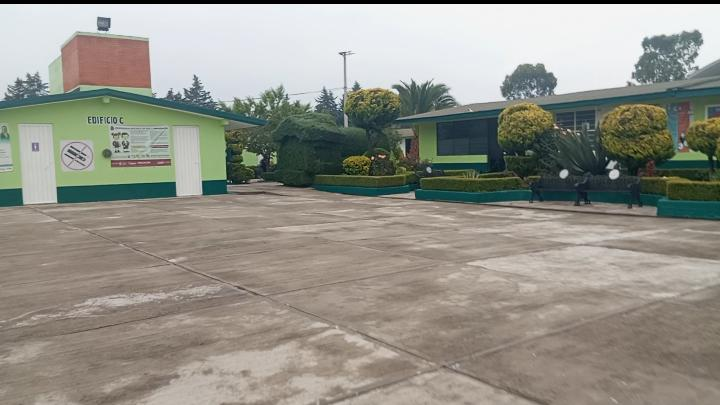

Bienvenidos al repositorio digital educativo desarrollado por estudiantes de sexto semestre de la Escuela Preparatoria Oficial Núm. 05, con el propósito de fortalecer conocimientos básicos para el ingreso a la educación media superior.
Formar ciudadanos críticos, creativos y socialmente responsables a través de un modelo educativo humanista que integra el desarrollo académico, tecnológico y socioemocional, preparando a nuestros estudiantes para los desafíos de la educación superior y el mundo profesional.
Ser la institución educativa de referencia en la región, reconocida por su calidad académica, su innovación tecnológica y su compromiso con el desarrollo sostenible de la comunidad.